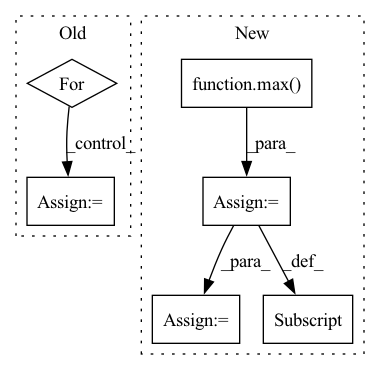

Pattern ID :10773

Before Change
weights[n_gram-1] = 1
weights = tuple(weights)
self_bleu_score = []
for idx in range(len(generate_corpus)):
candidate = generate_corpus[idx]
reference_corpus = generate_corpus[:idx] + generate_corpus[idx+1:]
self_bleu_score.append(sentence_bleu(reference_corpus, candidate, weights,
smoothing_function=SmoothingFunction().method1))
After Change
return results
def self_bleu_(generate_corpus, n_grams, reference_corpus=None):
weight = [0] * max(n_grams)
weights = {}
for n_gram in n_grams:
weight[n_gram - 1] = 1.0
weights[n_gram] = tuple(weight)
weight[n_gram - 1] = 0.0
bleu = SelfBLEU(generate_corpus, weights)
scores = bleu.get_score()
results = []
for n_gram in n_grams:
score = np.array(scores[n_gram])
results.append(score.mean())
return results
In pattern: SUPERPATTERN
Frequency: 3
Non-data size: 6
Instances
Fragment ID: 37157895
Project Name: rucaibox/textbox
Commit Name: 74995b26ad538f821707a331a83f34c8559f1ed8
Time: 2020-12-03
Author: 1020139164@qq.com
File Name: textbox/evaluator/metrics.py
M Class Name: AnonimousClass
N Class Name: AnonimousClass
M Method Name: self_bleu_(3)
N Method Name: self_bleu_(3)
M Parent Class:
N Parent Class:
M File Name: textbox/evaluator/metrics.py
N File Name: textbox/evaluator/metrics.py
M Start Line: 29
M End Line: 38
N Start Line: 40
N End Line: 54
'>
Before Change
weights[n_gram-1] = 1
weights = tuple(weights)
self_bleu_score = []
for idx in range(len(generate_corpus)):
candidate = generate_corpus[idx]
reference_corpus = generate_corpus[:idx] + generate_corpus[idx+1:]
self_bleu_score.append(sentence_bleu(reference_corpus, candidate, weights,
smoothing_function=SmoothingFunction().method1))
return sum(self_bleu_score) / len(self_bleu_score)
After Change
return results
def self_bleu_(generate_corpus, n_grams, reference_corpus=None):
weight = [0] * max(n_grams)
weights = {}
for n_gram in n_grams:
weight[n_gram - 1] = 1.0
weights[n_gram] = tuple(weight)
weight[n_gram - 1] = 0.0
bleu = SelfBLEU(generate_corpus, weights)
scores = bleu.get_score()
results = []
for n_gram in n_grams:
'>
Fragment ID: 37157876
Project Name: rucaibox/textbox
Commit Name: 74995b26ad538f821707a331a83f34c8559f1ed8
Time: 2020-12-03
Author: 1020139164@qq.com
File Name: textbox/evaluator/metrics.py
M Class Name: AnonimousClass
N Class Name: AnonimousClass
M Method Name: self_bleu_(3)
N Method Name: self_bleu_(3)
M Parent Class:
N Parent Class:
M File Name: textbox/evaluator/metrics.py
N File Name: textbox/evaluator/metrics.py
M Start Line: 29
M End Line: 38
N Start Line: 40
N End Line: 54
'>
Before Change
self._i += 1
for object_id, translation in translations.items():
self.translations[object_id] += translation
z_min = pp.get_aabb(self.target_object_id)[0][2]
After Change
self.translations[object_id] = (
self.translations[object_id] + translations[object_id]
)
self.max_velocities[object_id] = max(
self.max_velocities[object_id], max_velocities[object_id]
)
z_min = pp.get_aabb(self.target_object_id)[0][2]
// primary task
if z_min >= self.Z_TARGET:
terminal = True
reward = 1
elif self._i == self.episode_length:
terminal = True
reward = 0
else:
terminal = False
reward = 0
// reward shaping
if not self.eval:
reward += self._reward_time
if self._use_reward_translation:
reward += -sum(translations.values())
if self._use_reward_dz:
reward += (z_min - self._z_min_prev) / (
self.Z_TARGET - self._z_min_init
)
if self._use_reward_max_velocity:
reward += -sum(max_velocities.values())
self._z_min_prev = z_min
logger.info(f"Reward={reward:.2f}, Terminal={terminal}")
info = {"translation": sum(translations.values())}
if terminal:
info["max_velocity"] = max(self.max_velocities.values())
return Transition(
observation=self.get_obs(),
'>
Fragment ID: 37157900
Project Name: wkentaro/reorientbot
Commit Name: 4af80650907c713550106a090a40a0f98e17ca2b
Time: 2021-06-11
Author: www.kentaro.wada@gmail.com
File Name: examples/target_pick/env.py
M Class Name: PickFromPileEnv
N Class Name: PickFromPileEnv
M Method Name: step(2)
N Method Name: step(2)
M Parent Class: Env
N Parent Class: Env
M File Name: examples/target_pick/env.py
N File Name: examples/target_pick/env.py
M Start Line: 342
M End Line: 392
N Start Line: 345
N End Line: 444